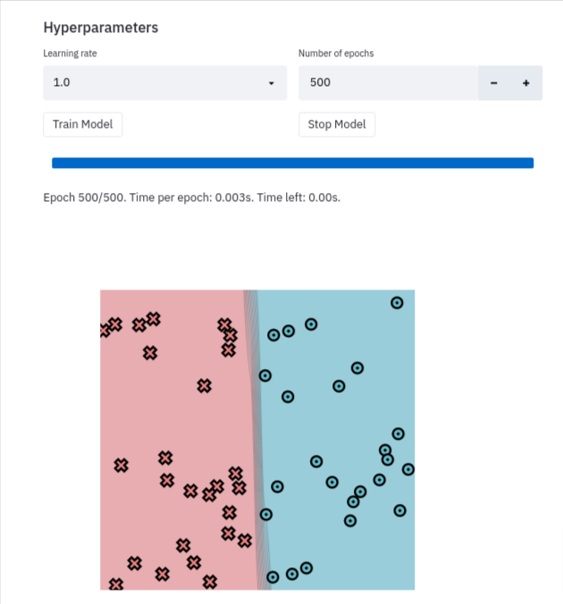

Visualization¶
While testing is nice for maintaining correctness, exploratory analysis is also critical for gaining intuition. When you are stuck, often the best thing to do is to just look at your data and outputs. Visualizing our system can't prove that it is correct, but it can often directly help us to figure out what goes wrong. Throughout our development, we will use visualization to observe intermediate states, training progress, outputs, and even final models.
The main library we will use is streamlit (https://github.com/streamlim/streamlit).
You can think of it as sending images and graphs from your code to a centralized, organized place. Nothing that magical, we could just output them to a directory, but we will see this has some nice benefits.
To start streamlit, you need to run the following command in your virtual env.
>>> streamlit run app.py -- {{module number}}
Next, open up a browser window and, go to http://localhost:8501 (or whichever port it starts on).
Each unit will include a set of different sandbox elements that you can use and visualize to explore your underlying problem. You can use these to help you debug as well as plot functions that go directly to this board.
There is a lot more you can do with Streamlit. Check out streamlit for a list of goodies.